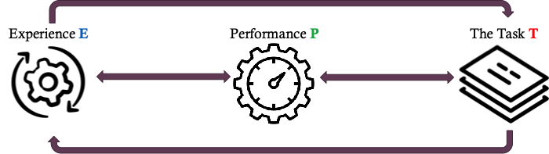

Deep Learning¶
Note
Aim: provide a broad overview of the concepts relating to the Machine Learning Basics Chapter of the Deep Learning book
Level: beginner 🌱🌿🌳
Chapter 5.1: Machine Learning Basics¶
As has been described previously in the Knowledge Base, Machine Learning can be defined in many ways. One principle starting point is with the definition of “learning”. With an objective baseline established for learning, progression in decision-making can be effectively measured and evaluated. In the following we explore and build on the concept of learning provided by Tom Mitchell in 1997 and present a real-world example which incorporates this definition.
Definition of “Learning” and a Practical Example¶
– Mitchell 1997
“A computer program is said to learn from experience E with respect to some class of tasks T and performance measure P, if its performance at tasks in T, as measured by P, improves with experience E.”
Learning as defined by Mitchell is comprised of an Experience (E), Performance (P), and Task (T) with the interaction between these elements giving structure to the learning system. The unique combination of these elements therefore articulates the environments, observations and scores that one can expect of the learning system. Let us delve into each individually.

Task: Tasks describe the kind of observations a learner processes, often times represented by an example (i.e., observation instance) containing a collection of Features. Tasks in the real-world typically are of a classification or regression type.
Classification: solving classification tasks involves the learning algorithm producing a function f:Rⁿ→ {1, … , k} which assigns an input described by vector x to a category identified by numeric code k
Regression: solving regression tasks involves the learning algorithm producing a function f:Rⁿ→ R which assigns an input described by vector x to a numeric scalar
Performance: Performance exacts the quantitative evaluation used to design metrics in a learning system. Measures of performance are tied to the nature of the task, for example metrics can be:
In Classification: Accuracy, Precision and Recall, F1-score, AU-ROC
In Regression: Mean Absolute Error (MAE), Mean Squared Error (MSE), Root Mean Squared Error (RMSE), R² (R-Squared)
Experience: Experience defines the training experience the system will face and this encompasses the scope of learning situations surrounding the learning system. A number of attributes contributes to a training experience.
Feedback: Is the nature of feedback direct or indirect, for example do training observations have direct training outcomes (i.e., labels) or is there indirect information for the learner to infer outcomes
Control: To what extent does the learner control the sequence of training examples, is part of the training experience provided by a random process outside the learner’s control? Determining the supervised or unsupervised nature of a learner can help in understanding it’s control over the training experience
Representation: How well does the learner represent the distribution of examples over which the final system Performance (P) is measured? The learner’s experience is more reliable when training examples follow the distribution similar to future test examples
Solving a Logistic Regression Problem¶
- Imagine a practical circumstance in which a learning system is critical. Multiple Hospital’s in Norway require for resourcing, infrastructure and logistical reasons to predict the volume of Cesarean section operations which are either classed as planned or not. From the definition of a learner outlined earlier, the following can be established:
Task: The training task involves predicting if (ŷ) a c-section is planned (1) or not (0) from health data of pregnancies given x age, x marriage, x insurance
Performance: The desired scoring of the system is the accuracy of positive c-sections predicted as True Positives (TP) in a classification matrix
Experience: The training experience involves observational samples with labels from Norwegian hospitals drawn from public registries
In probalistic terms we are trying to predict the probability that a cesarean is planned given features of the patient such as measures of health and economic markers - P(cesarean=1|age, marriage, insurance).
In logistic regression the formula is input through the sigmod function (y = sigmod (x age + x marriage + x insurance + c)) which provides probabilities ranging from 0 to 1 before predicting the final result. The prediction then uses a logit function to produce the logarithm of odds by exponentiating the log-odds (y = 1 / (1 + e -(x age + x marriage + x insurance + c))), the value of y is then designated 1 if it is above 0.5 and 0 if below 0.5, normalising the output of the equation to the classification labels of our problem.
Components of a Machine Learning (ML) Algorithm¶
In traditional programming, we directly instruct the program on the rules to come to a desired outcome (i.e., Rule + data = Outcome). But in ML the logic is reversed for developing rules (i.e., Data + Outcome = Rule). In ML we start by describing the output (the format of the rule) and use this as guidance of what we want the learner to understand, without explicitly telling it what these rules are. In theoretical terms, the data we use becomes a key into a representation space of possible rules.
After choosing a representational space, we need large volumes of data examples with “gold standard” labels which incidate normal and targeted problem instances.
Next, we need a loss function which evaluates potential rules and defines an objective to minimize. The reasoning behind defining a scoring (i.e., loss) function is to allow for a mechanism to indirectly define rules. For example, if a loss function produces rules which are too complex, it can be penalized to encourage the learner not to search for overcomplicated rules which closely mimic the data, ultimialty causing the model to fail to generalize (i.e., Overfitting).
Lastly, a ML algorithm requires an optimizer, which uses educated guesses to improve rules by minimizing loss. A popular example, specifically in the field of deep learning is gradient descent, which optimises a loss function by moving in the direction opposite to the steepest ascent.
These components to a ML algorithm, to Represent (Representational Space), Evaluate (Loss function of data) and Select (Optimizer) forwards the notion that ML is a process of optimizing loss over a representational space.
Machine Learning as Optimizing Search¶
A foundational question in ML is: how do we tell the difference between real signals that generalize to new situations (i.e., environments with unforseen inputs) and spurious associations (i.e., noise due to random chance). The problem of spurious associations is encapulated by Overfitting which is a pitfall that occurs when a rule looks to behave well on data that it is picked for but functions poorly on the broader set of environments where the rule is applied.
The deep learning book provides further clarification on factors determining how well a ML algorithm will perform: – Goodfellow et al. 2016
In there perspective, the first factor relates to the challenge of underfitting when models are not able to obtain a sufficiently low error value on the training set. The second factor relates to the challenge of overfitting when the gap between the training error and test error is too large, that is to say that the model functions poorly on the holdout testing set.
Understanding the role of partitioning data into a training (i.e., data used to construct the rule), validation (i.e., data used to decide on a representational space) and test set (i.e., data used to evaluate the final rule) allows for a systematic approach to designing models that are relevant to data collected for the future, not just for data that the model is trained on in the present. In principle Machine Learning seeks to optimally search a search space, avoid underfitting and overfitting and reach a robust optimal rule which extends to new situations.
Overcoming Overfitting¶
- The Machine Learning field has developed techniques which have directly tackled the problem of overfitting. Two of the most prominent are Cross-validation and Regularization.
Cross-validation: Cross-validation helps models remain accuracte and also avoid using too big of a representational space by setting aside splits of training/testing data which help to assess generalization in a more fine-grained manner. The model in 5-fold cross-validation for example is trained on 5 different versions of training data and evaluated on 5 different versions of testing data, encouraging consistency in the process of evaluation.
Regularization: Regularization helps models to remain simple by including a component to the loss function which penalises model complexity. This modification makes rules more consistent by penalising high error scores and large representational spaces. Examples of regularization include Ridge Regression or Lasso Regression.
Recommended literature¶
Goodfellow IJ, Bengio Y, Courville A. Deep Learning. MIT Press; 2016. https://mitpress.mit.edu/books/deep-learning
…